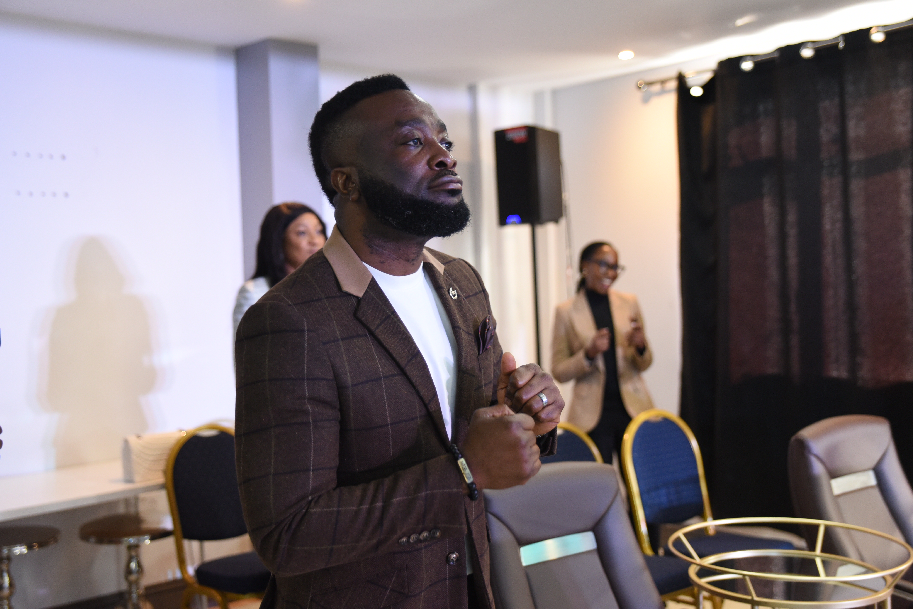

ABOUT US
A church committed to raising lives, building faith, and bringing people into real encounters with God in South London.
WHO WE ARE
Streams of Joy South London is the South London expression of Streams of Joy International, a growing global church community committed to raising lives and building faith.
Our heart is to see people encounter Jesus, grow in faith, and become all that God has called them to be. We are passionate about building a church where people feel welcomed, strengthened, and transformed.
What God Cannot Do Does Not Exist.
OUR HEART
We exist to raise lives, build faith, and point people to the reality of Jesus through prayer, worship, and the Word.
Helping people grow spiritually and personally through Christ.
Creating an atmosphere of prayer, worship, and sound teaching.
Pointing people to God’s power, love, and purpose in everyday life.
GLOBAL LEAD PASTOR
Pastor Jerry Eze is the Lead Pastor of Streams of Joy International and a globally recognised voice of prayer, faith, and revival.
Through his ministry, countless people across the world have been encouraged, strengthened, and drawn into deeper encounters with God. His leadership has helped shape a growing global community rooted in prayer, the Word, and the demonstration of God’s power.
“What God cannot do does not exist.”
RESIDENT PASTOR
Pastor Phreddy’s journey in ministry began with a deep hunger for prayer while he was still in secondary school after being baptised in the Holy Spirit. What started as a growing desire to pray became a clear call from God, confirmed through repeated prophetic words and a strong conviction that it was time to step into ministry.
Streams of Joy was a direct answer to prayer as he was seeking a place to serve. Through Pastor Moses he was introduced to Pastor Jerry Eze and the NSPPD prayer movement, which reignited his prayer fire and strengthened his calling.
Serving under Pastor Dr Jerry Eze is a prayer answered and a great honour. Pastor Phreddy sees it as being guided by someone who knows the way, whose ministry results are evident, visible, and full of impact for the glory of Jesus.
Pastor Phreddy carries a vision for a united people filled with the love of Christ — people from different backgrounds, cultures, colours, and languages coming together under the Spirit of God as a beacon of light to the community.
His desire is to see a church where the fire of prayer burns strongly, where lives are transformed, and where God’s kingdom is established on earth with joy, peace, righteousness, and the visible manifestation of the Holy Ghost.
He also believes the young have a major role to play in what God is doing. His heart is to see young people discover their purpose, develop their gifts, and use them to impact both the church and society at large.
Music has been part of Pastor Phreddy’s life from a very young age, and over the years God has given him songs and opportunities to minister alongside great gospel musicians. He believes worship creates an atmosphere of possibilities where people can lay down their burdens and encounter God.
Pastor Phreddy leads with love, peace, and an inclusive heart where people feel valued, heard, and strengthened. He believes everything is ministry, and that whatever God has placed in our hands should be used for His glory and for service to humanity.
“For the earnest expectation of the creation eagerly waits for the revealing of the sons of God.” — Romans 8:19

FULL STORY
I was still in secondary school after I got baptised in the Holy Spirit and it was more of a drive to pray more.
God has been saying it is time but I really was afraid of ministry until I began to hear the same prophecy from different people.
Streams of Joy was a prayer answered as I was praying hard for a place to serve. I got to know Papa Jerry and NSPPD through Pastor Moses and this revived my prayer fire.
Serving under my dearest Papa Pastor Dr Jerry Eze is a prayer answered. It is like being driven by someone that knows the way. His results are evident and visible for all to see and I am happy I can copy what he has shown us to get same results and Jesus is glorified.
I want to see a united people with the love of Christ burning in our hearts. People from different backgrounds, culture, colours, languages coming under the Spirit of God as a beacon of light to our community. A people with the fire of prayer burning in our bones to see God's kingdom established on earth. A church where the streams of joy flows freely.
My vision is for a church that gives life to all around it. A place of great manifestations of the Holy Ghost, joy, peace and righteousness. Where youth are running with God’s vision and fire.
A culture of love and joy in the Holy Ghost. A people that will stop at nothing and nothing stops them. A people of fire that does not give up no matter what the devil throws at them.
Variety is the spice of life and although we look different, we all bleed red. We all need each other to fulfil God's mandate and push this revival to the ends of the world.
The young have a big role to play in what God is doing. They will discover their purpose, talents and use them to better the church and the society at large. We will work together to get young people off the street, give them a purpose as they are the future.
Music is my love from a very tender age. God gives me songs in my dream and I have been privileged to be on stage with great gospel musicians.
Worship is our war-ship and it creates an atmosphere of possibilities where people will drop their burdens to worship.
Inclusive leadership style where everyone's idea and perspective matters.
When people meet me, I want it to be like Christ. Encounter with love, peace and solution. I want to cheer people up and give them hope.
One call from your pastor and fellow believers can brighten your day. Anything within our capacity to bring joy to our people means a lot to us.
I believe everything is ministry. If you are a nurse, engineer, doctor, lawyer, in government, whatever you do should be to the glory of God. God placed you there for service to Him and to humanity. So serve as if God is watching because He is watching.
“I am a life giving Spirit.”
WHAT TO EXPECT
Whether you are exploring church for the first time or looking for a church family, there is a place for you here.
Friendly people and a welcoming atmosphere from the moment you arrive.
Uplifting worship and moments of prayer that help build faith.
Clear biblical teaching that speaks to real life and spiritual growth.
JOIN US
Whether you’re planning your first visit or looking to get involved, there is a place for you at Streams of Joy South London.